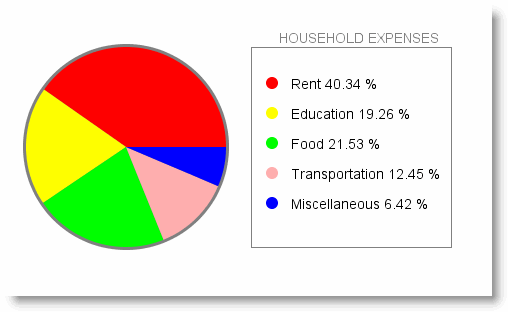

Now that you understand something
about Applet Graphics, let's see if you can apply it to
writing a "practical" program, one that displays a pie-chart
of your living expenses. You'll need to use the Graphics
methods fillArc(), fillOval(),
drawRect(), drawString(),
fillOval(), setColor(),
and setFont().
Applet Graphics: Pie Chart
Complete the applet named PieChart.java that draws a
pie chart showing the percentage of household income
spent on various expenses. Use the percentages already defined as
instance variables in the starter code in the Chapter04
folder. These percentages will be randomly generated every time
you start your applet.

Here's an example that you can use as a guide. Yours may look much differently of course, but the pie percentages should be accurate.- Each section of the pie should be in a different color.
- Label each section of the pie with the category it represents.
- The labels should appear outside the pie itself. An easy way to do
this is to use
drawRect()to create a legend area on the applet, as in my example here; but, you can paint labels with leader lines, if you want.
The starter code automatically sets the screen to 500 wide by 350 high. Do all your painting inside these dimensions.
The Check program only grades the basic syntax and structure of your applet. When you check your program, I'll take a picture and put it on the monitor at the front of the room. Once your picture appears there, and you are happy with it, you can close DrJava and go home.